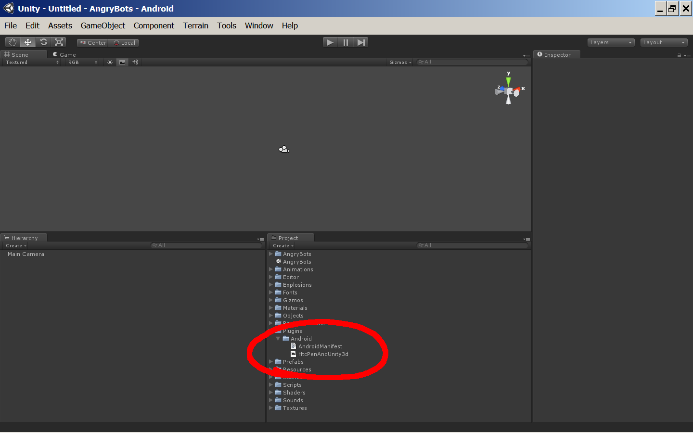

This sample code demonstrates using the HTC Scribe pen with the Unity 3D game engine. The Unity 3D game engine is a cross platform game engine, enabling quick development of high quality, cross platform games. The engine supports running Android specific code via a plugin mechanism. This sample code is a plugin that acts on the HTC Scribe pen being pressed to the screen with the first button or second button pressed. The first button is used to trigger the same action as the menu button on the device. The second button is used to trigger the same action as the back button on the device.
The plugin is installed by placing the HtcPenAndUnity3d.jar and AndroidManifest.xml file from the root directory of this project into the Plugins/Android directory in the Unity project:

The AndroidManifest.xml file specifies that Unity should use an extension to the UnityPlayerActivity class that it usually uses to run the game called PenUnityActivity, PenNativeUnityActivity is also available to extend UnityPlayerNativeActivity:
<activity android:name="com.htc.sample.pen.unity.HtcPenAndUnity3dActivity" android:label="@string/app_name" android:configChanges="keyboard|keyboardHidden|orientation"> <intent-filter> <action android:name="android.intent.action.MAIN" /> <category android:name="android.intent.category.LAUNCHER" /> </intent-filter> </activity>
This extension calls classes to detect the presence of pen events and translate them into other events:
@Override
public boolean dispatchTouchEvent(MotionEvent ev) {
// If the current device supports the pen feature...
if ( PenFeatureDetector.hasPenEvent(this) ) {
// Then translate it or record its value for scripts to access.
return PenLatch.INSTANCE.dispatchTouchEvent(this, ev);
}
// Otherwise, pass events on.
return super.dispatchTouchEvent(ev);
}
To alter the behavior, import the HtcPenAndUnity3d project into Eclipse, change the Java code, and export the compiled classes into a new HtcPenAndUnity3d.jar to be copied into the Unity project.